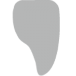
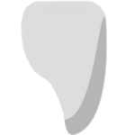

NOVA Amber
NOVA — это дисиликат литийные стеклокерамические блоки для CAD/CAM технологии. Инновационная технология изготовления блоков придает материалу превосходную однородность.
Блоки находятся в промежуточном кристаллическом состоянии, что позволяет с легкостью их фрезеровать на CAD/CAM оборудовании. Необычная окраска блоков от серого до фиолетового и бежевого связана с составом и микроструктурой стеклокерамики.
После фрезерования материал кристаллизуется специальной печи для обжига керамики (например, например Deprag P7). Процесс кристаллизации прост в осуществлении и занимает примерно 10 минут.
Блоки NOVA демонстрируют естественную яркость. А полупрозрачность и разнообразие оттенков позволяют изготавливать реставрации в полном анатомическом объеме из этой стеклокерамики без каких-либо проблем.
-

Фронтальные коронки
-

Виниры
Технические характеристики
| Общие характеристики | |
|---|---|
| Прочность | 430 мПа |
| Транслюцентность | |
| Размеры | C14 |
| Цвет | HT-OM2 |
| Температура спекания | 827℃ |
| Коронки | |
| Фронтальные коронки натурального цвета | |
| Фронтальные коронки с эффектом отбеливания | |
| Коронки жевательной группы | |
| Вкладки и Накладки | |
| Вкладки | |
| Накладки | |
| Виниры | |
| Натурального цвета | |
| Выбеленные (опаковый/непрозрачный) | Допустимо |
| Выбеленный (высокоэстетичный/прозрачный) | |
| Ультратонкий | Допустимо (0.28 — 1 мм) |
| Мосты | |
| Фронтальный мост натурального цвета | |
| Выбеленный фронтальный мост | Допустимо |
| Мост жевательной группы | |